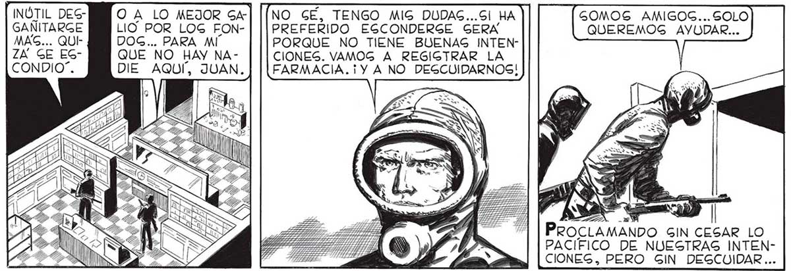
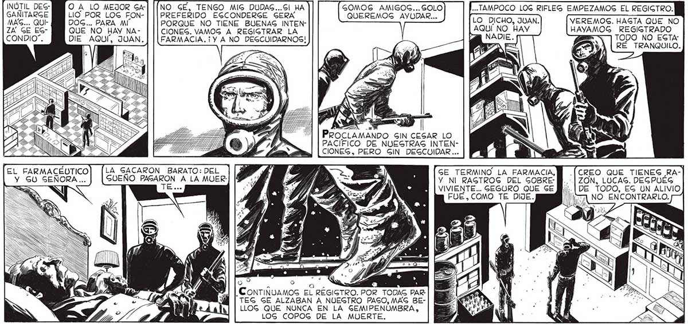
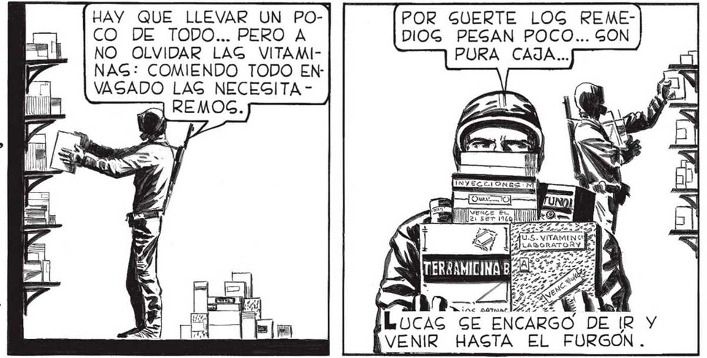

INÓTIL DEG- OA LO MEJOR GA4-| [[NO GE, TENGO MIG DUDAS...SI HA GANITARGE LIO POR LOG FON- PREFERIDO EGCONDERGE GERA a DOG... PARA MI PORQUE NO TIENE BUENAS INTENQUE NO HAY NA - CIONES. VAMOG A REGIGTRAR LA GOMOS AMIGOS... SOLO ...TAMPOCO LOG RIFLEG EMPEZAMOS EL REGIGTRO. QUEREMOS AYUDAR... LO DICHO, JUAN. VEREMOS. HAGTA QUE NO AQUÍ NO HAY REGIGTRADO TODO NO EGTARÉ TRANQUILO. DIE AQUÍ, JUAN. FARMACIA. Y A NO DEGCUIDARNOGS! PROCLAMANDO GIN CESAR LO PACIFICO DE NUESTRAS INTENCIONES, PERO GIN DEGCUIDAR ... TEL FARMACÉUTICO] [LA SACARON BARATO: DEL GE TERMINO LA FARMACIA, Y GU SEÑORA... GUEÑO PAGARON A LA MUER- Y NI RAGTROG DEL SOBRE- ZON, LUCAS. DEGPUEG == e VIVIENTE... SEGURO QUE SE DE TODO, EG UN ALIVIO FUE, COMO TE DIJE. USA NO. ENCONTRARLO. [CREO QUE TIENEG RA-] OQ Ó Oo lo: . : ? , CONTINUAMOS EL REGIGTRO. POR TODAS PARTEG GE ALZABAN A NUEGTRO PASO, MAG BELLOG QUE NUNCA EN LA GEMIPENUMBRA, LOG COPOG DE LA MUERTE. VEN, VOLVAMOG AL GALON DE VENTA Y EMPECEMOS DE UNA VEZ CON LA CARGA DEL FURGON. YA HEMOS PERDIDO HAY QUE LLEVAR UN POCO DE TODO... PERO A NO OLVIDAR LAG VITAMINAG: COMIENDO TODO ENPOR GUERTE LOG REMEDIOG PESAN POCO... GON PURA CAJA... HABÍA QUE CONVENCERGE: EGTABAMOG D > RIOS MINU=EMAGIADO TIEMPO E, VAGADO LAG NECEGITA TOG TRABAJAFARMACIA. SIN MOG AGÍ, DEMORARNOS MAS, TOTALMENTE ORGANIZAMOS ABGORTOS EL TRABAJO: YO, EN LA TRAS: TAREA. TAN TIENDA, SACA- ABGORTOG BA DE LOS QUE EGTANTEG NINGUNO LAG CAJAS DE LOG DE LOG . pa DOG , MEDICAMENTOS... E AN REPARO... LocAs SE ENCARGO DE IR Y VENIR HAGTA EL FURGON.


